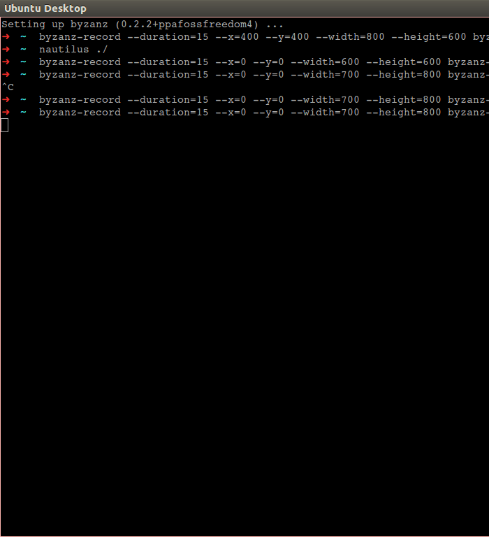

NaturalDocs for Javascript in Emacs
Last week we decided to use NaturalDocs for Javascript documentation at work. I noticed that a few of my colleagues who are SublimeText users started using a plugin that inserts docstring skeleton in code. I tried to find a similar mode in emacs but couldn't find one. But this is emacs right? and it's called a "programmers editor" for a reason. What do you do if you need some functionality and there isn't a mode for it? You simply write your own!
So, I decided to spend a few hours of this weekend writing some elisp code for intelligently inserting NaturalDocs style docstring in javascript. Here is the result and I am quite happy with it.

You can find the source code here
It was an 'achievement unlocked' moment for me as this is the first time I have written emacs lisp that comes so close to being called a "mode". But I will not call it a "mode" yet for the following reasons:
-
I know it just works but isn't packaged like other emacs mode out there.
-
The code may be violating elisp code conventions. I need to read up more on this topic.
-
Right now some code seems to be 'imperative' and can be made a lot more 'functional'.
-
It only supports javascript but can be extended to other languages. After all NaturalDocs work for many languages.
-
It needs to be refactored to improve test coverage. I have done some unit testing using assert statements but there is probably a better way that supports mocking the buffer, point etc..
In the coming days, I plan to work on these points.
This was also the first time I learnt how to work with the elisp manual. Earlier I had tried to read it as a book. But with no clear task in mind, I lost the motivation soon. This time I had a task to accomplish and after breaking it down into smaller tasks it was very easy to search through the manual. I found it to be very well written and was sufficient most of the times although a few times I had to resort to stackoverflow.
Hopefully I will release it as a mode some day.